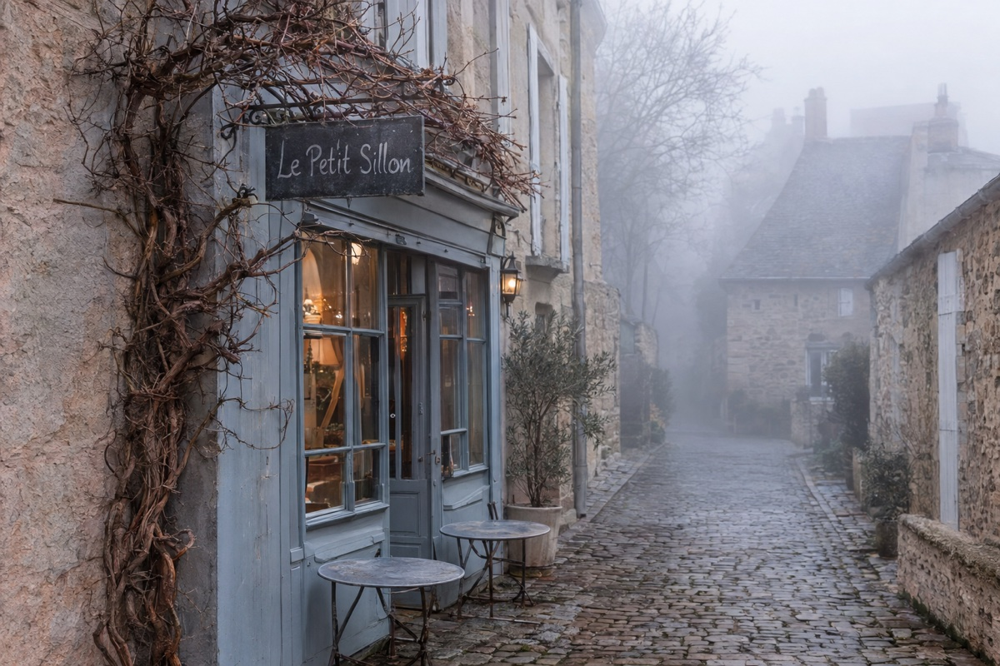

Le Petit Sillon

A small café on a quiet dead-end lane, with a few pavement tables and a hand-built counter. The owner roasts her own beans in the back room and serves them as espresso, long black or filter.

A small café on a quiet dead-end lane, with a few pavement tables and a hand-built counter. The owner roasts her own beans in the back room and serves them as espresso, long black or filter.